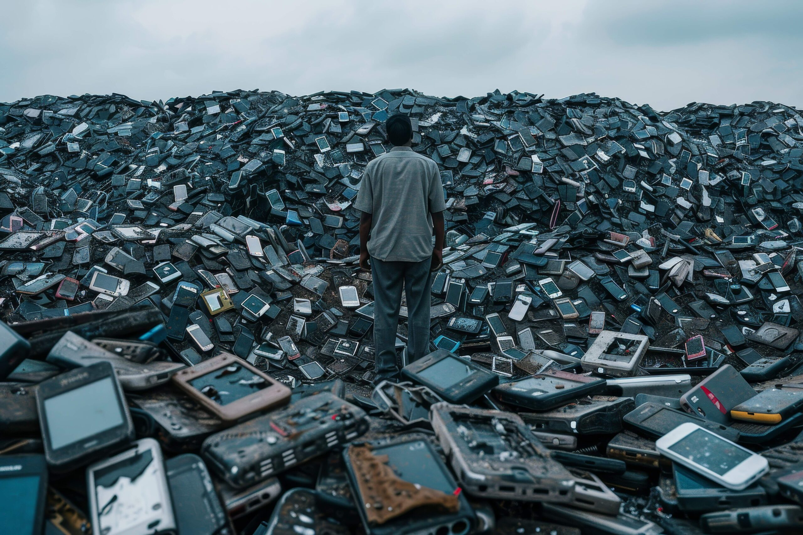

O que é Lixo Eletrônico?
O lixo eletrônico inclui todos os equipamentos e dispositivos eletrônicos descartados, como computadores,
celulares, televisores, baterias e outros. O descarte inadequado de lixo eletrônico é um problema crescente que impacta diretamente a saúde humana e o meio ambiente. Com o avanço da tecnologia, o número de dispositivos eletrônicos obsoletos ou danificados aumentou consideravelmente, mas, infelizmente, muitos desses materiais são descartados de forma irresponsável, sem levar em conta os impactos negativos que causam.

Impactos Ambientais do Descarte Inadequado e Riscos à Saúde Humana
Os aparelhos eletrônicos contêm substâncias tóxicas, como mercúrio, chumbo, cádmio e arsênio, que podem vazar para o solo e os corpos d'água quando descartados de maneira inadequada. Esses produtos químicos são altamente poluentes e podem contaminar o solo, os rios e até o ar, prejudicando a fauna e a flora locais. A degradação de ecossistemas pode ocorrer lentamente, mas seus efeitos são devastadores, afetando a biodiversidade e os recursos naturais de regiões inteiras.
Além disso, a maior parte dos dispositivos eletrônicos é composta por materiais que podem ser reciclados, como plásticos e metais. No entanto, ao serem jogados no lixo comum, esses materiais se tornam irreversíveis, desperdiçando recursos valiosos e contribuindo para a crescente quantidade de lixo nos aterros sanitários. A poluição gerada pelo descarte indevido de resíduos eletrônicos acelera a saturação do espaço disponível para os aterros e a necessidade de novos locais de disposição.
Quando o lixo eletrônico é descartado de maneira imprópria, especialmente em lixões a céu aberto, a exposição às substâncias tóxicas presentes nos aparelhos pode causar sérios problemas à saúde. O contato com esses materiais pode levar a doenças respiratórias, cardiovasculares, câncer e danos ao sistema nervoso. Além disso, crianças que brincam em áreas contaminadas ou que têm acesso ao lixo eletrônico podem ser mais vulneráveis a esses riscos, uma vez que seus corpos ainda estão em desenvolvimento.
Outra questão grave é a prática comum de queima de lixo eletrônico em locais não regulamentados. A queima libera gases tóxicos na atmosfera, como dioxinas e furanos, que são extremamente prejudiciais à saúde humana, causando problemas respiratórios, doenças pulmonares crônicas e até complicações no sistema imunológico.
